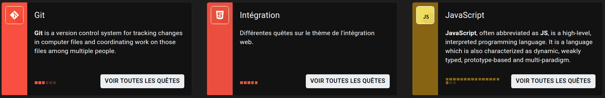
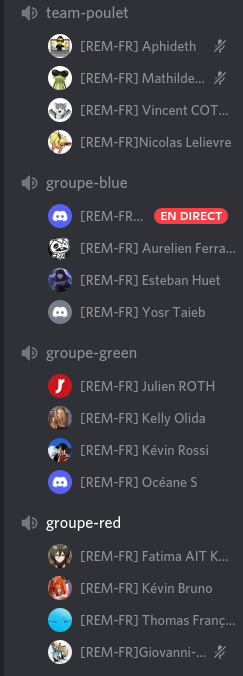

🙋♀️
Stand up
🙋♀️🔁
Rétrospective
🔁❓
Kahoot
❓

Aaah... les quêtes! C'est surement ce sur quoi vous allez passer le plus de temps au début de votre formation.
Alors oui c'est normal, il faut bien apprendre, mais vous allez apprendre d'abord à vous débrouiller seul pour assimiler
la méthode et ensuite viendront les détails pendant le cours/live coding.
Les quêtes sont bien faites et explicites.
Vous avez également des astuces des autres élèves (sur de la documentation par exemple).
Surtout faites bien vos quêtes AVANT les cours pour avoir les notions principales et ne pas être largué.
Une fois les quêtes terminées, vous avez des exercices pour vous entraîner. Ce sont les autres élèves qui vont les
corriger. C'est une très bonne méthode d'apprentissage car, si vous savez relire le code d'une personne, alors vous
avez assimilé les connaissances nécessaires. Surtout qu'il y a plusieurs réponses possibles pour un exercice, qui vous
permettront en les corrigeant, de vous donner une nouvelle vision.
🔭
Quêtes
🔭🚀
Correction
🚀👨🏫
Cours
👨🏫👩💻
Live Coding
👩💻⚗️
Workshop
⚗️

Tout au long de ta formation, tu auras à réaliser 3 projets. Les projets se font en groupe et te permettront d'étoffer
ton portfolio (c'est donc super important!), surtout que le dernier sera donné par un vrai client!!
C'est un vrai challenge car il faut pouvoir s'organiser, déléguer, dialoguer, s'armoniser et respecter la deadline
imposée avec ton équipe.
A la fin de ton projet, tu le présente avec ton groupe et fais une démo de ton site/application.
Le Dojo (non tu ne vas pas pratiquer d'art martial rassure toi), est un défi de programmation en petit groupe.
Vous allez partager un IDE commun et coder à tour de rôle, comme dans un relai, avec un capitaine (celui qui code) et un co-pilote
(celui qui donne des consignes) qui changeront toutes les 3 à 5 minutes.
Les autres doivent attendre leur tour et ne peuvent intervenir d'ici là.
Cet exercice n'est pas simple mais permet de mieux t'exprirmer et de mettre des mots sur ton code pour faciliter
sa compréhension.
Contraction de "hack" et "marathon", un hackathon est un événement lors duquel des équipes doivent développer un projet informatique.
Elles doivent le faire sur une période limitée, et généralement courte (une journée, une nuit, un week-end).
Le but est donc de coder rapidement quelque chose de malin.
Il s'agit aussi de développer de manière intensive, sans s'arrêter dans un contexte d'émulation mais aussi de camaraderie.
🏗️
Projet
🏗️👘
Dojo
👘🧠